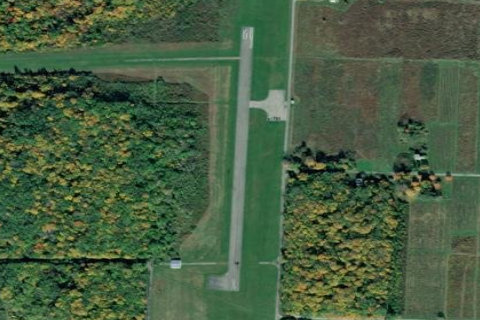

North Bass Island, OH
3X5

Aerial imagery source: Esri, Vantor, Earthstar Geographics, and the GIS User Community
| Identifier | 3X5 |
|---|---|
| Elevation | 594 ft |
| CTAF | 122.9 |
| Coordinates | 41.717999, -82.821098 |
Notes
[shortfield] Location Overview North Bass Island Airport sits on North Bass Island, also known as Isle St. George, in Ottawa County, Ohio. The island is one of the Bass Islands in Lake Erie and is the largest community on it, Isle Saint George, which is quite small. North Bass Island is the northernmost U.S. island in Lake Erie, located roughly 18 miles from the Ohio mainland and less than 2 miles from the Canadian border. The airport is publicly owned and operated by the Put In Bay Township Port Authority. Because there's no bridge or ferry-only reliance, the airstrip is one of just two practical ways onto the island, the other being private boat. Camping & Recreation Much of the island is preserved as North Bass Island State Park, since the state of Ohio purchased about 589 of the island's 688.6 acres to protect it from commercial development. The park offers a quiet, undeveloped setting for hiking, birdwatching, and lakeside relaxation, along with primitive camping and access to the island's small marina for boaters. Visitors can also explore remnants of the island's old vineyard estates, and the surrounding waters are popular for fishing. Because amenities are minimal and the island remains largely wild, it appeals mainly to travelers seeking solitude rather than resort-style recreation. Notes & Warnings Approaches to the airport are challenging due to its close proximity to the Canadian border, with Canadian airspace just 2 miles from the runway threshold, so pilots need to be mindful of international airspace boundaries. The airport covers about 33 acres and has a single runway. It's used mainly to bring mail to the island and to shuttle residents to and from nearby islands and the Ohio mainland. Griffing Flying Service operates charter flights connecting North Bass to Kelleys Island, Middle Bass, Pelee Island, Put-in-Bay, and Rattlesnake Island, among other stops. Scheduled or chartered flights typically run in the $40-50 range for adults and $20-25 for children, with kids under two flying free. Given the small strip and remote setting, pilots should expect limited services, no control tower, and weather that can change quickly off the open lake. History North Bass Island's first permanent residents were Roswell Nichols and his wife, who settled there in 1844, and early settlers Simon and Peter Fox later cleared land for grape growing and winemaking, efforts that Robert Gottesman later expanded. A post office was established on the island in 1864 under the name North Bass Island, later renamed Isle Saint George in 1874. The island's winemaking legacy was formalized in 1982 when Isle St. George was designated an American Viticultural Area, and grape growing has remained tied to the island for well over a century, though today only a portion of the land is still cultivated. The airport itself grew out of necessity, giving this hard-to-reach island reliable mail service and a way to move people to and from the mainland. In recent years it has received public funding, including a $22,000 pandemic-relief grant in 2021 and a $113,000 FAA grant in late 2023, reflecting its ongoing role as essential infrastructure for the island's small year-round population.